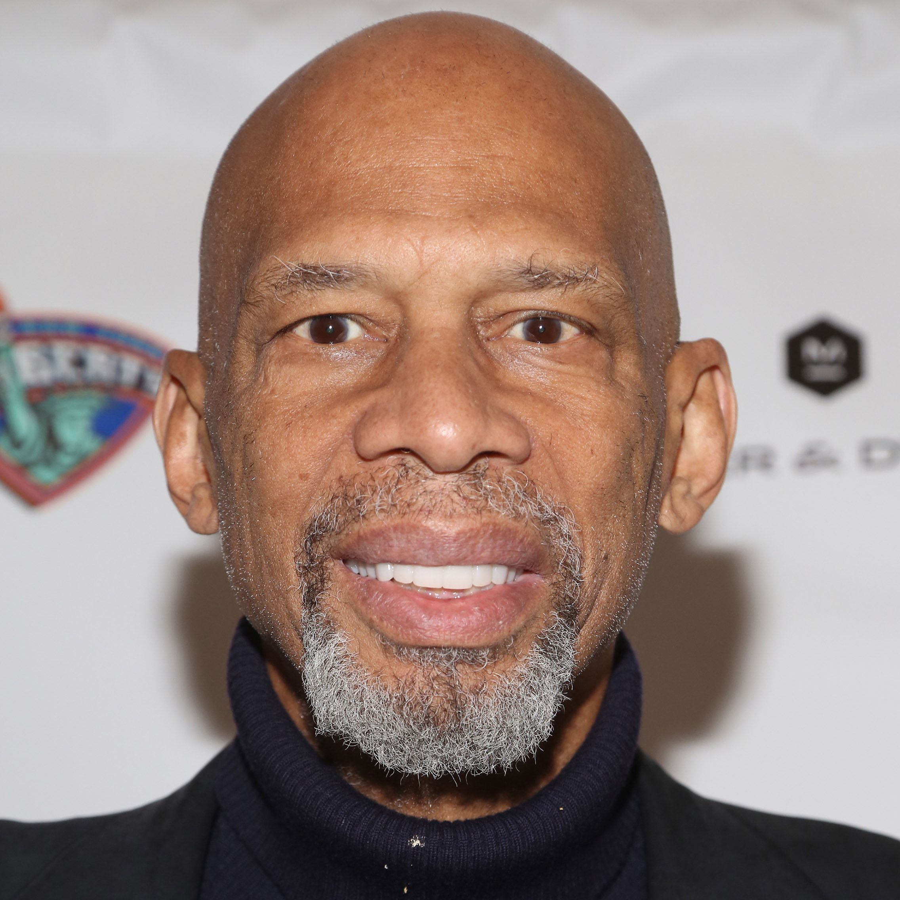
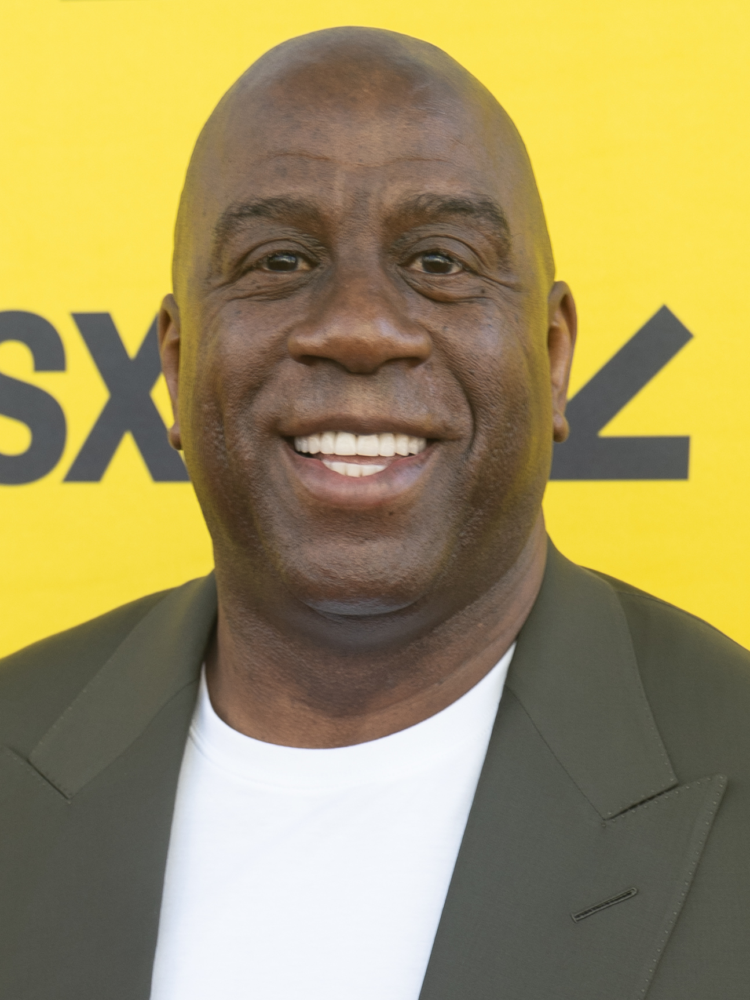
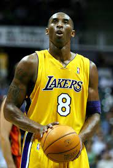
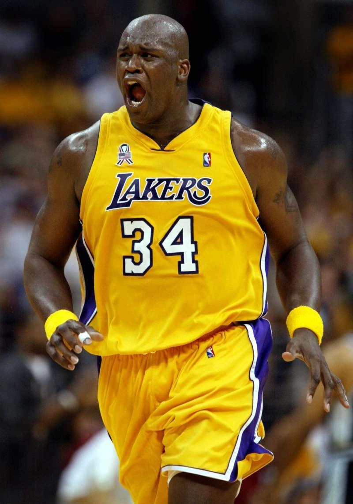
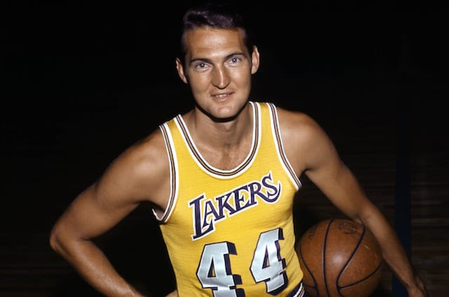
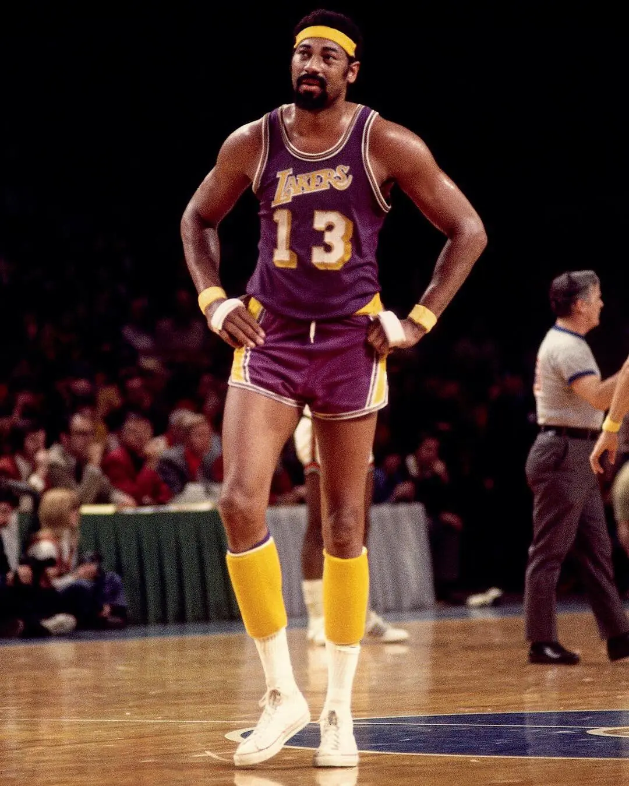
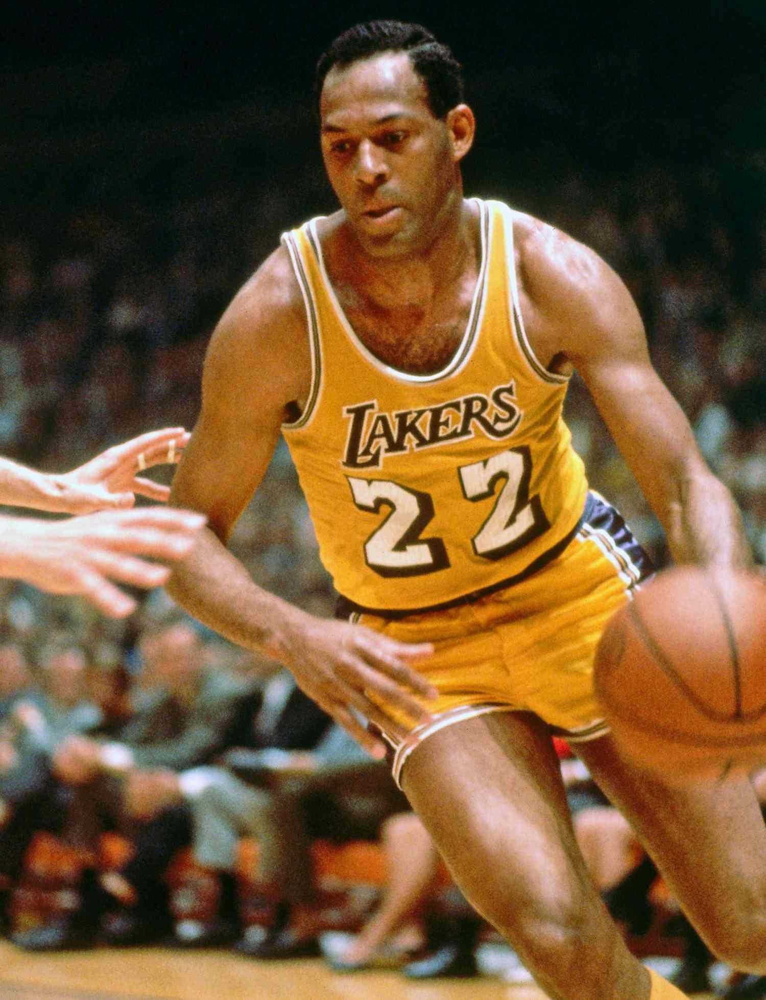
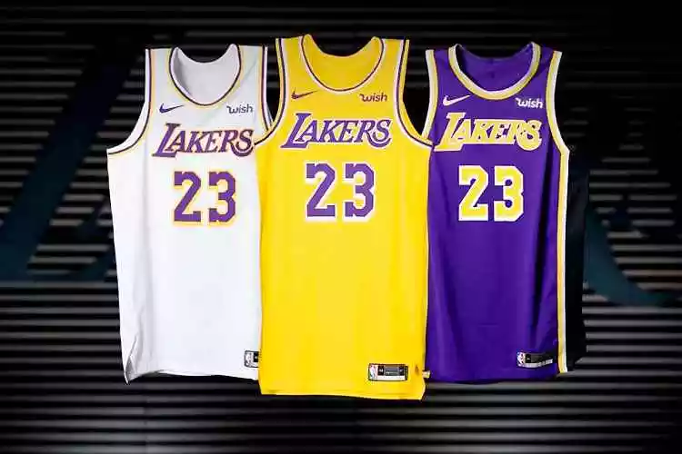

Lakers BR
História do clube
Fundado em 1947 após Morris Chalfen e Ben Berger comprarem a franquia por 15 mil dólares, os Lakers iniciaram a sua jornada na NBL (principal torneio de basquete dos Estados Unidos que existia antes da NBA) na temporada 1947/48. A equipe ainda se chamava Minneapolis Lakers quando anunciou a sua primeira estrela, o pivô George Mikan. O início dos Lakers na NBA foi avassalador.
Entre 1949 e 1954, a franquia conquistou o título em cinco oportunidades diferentes, mostrando a sua força. Somente em 1960, a equipe acabou se mudando para Los Angeles, recebendo o nome atual. Para a alegria dos torcedores, o não mudou foi o desempenho nas quadras.
Mantendo a sua trajetória de vitórias, a equipe conquistou mais 12 títulos da NBA, totalizando 17 conquistas até o momento, sendo um dos maiores campeões da história da National Basketball Association.
Recentemente, na temporada 2018/2019, com o objetivo de encerrar o jejum de títulos na NBA, o Los Angeles Lakers contatou a estrela LeBron James. Após batalhar bastante durante a competição, em 2019/20 o astro norte-americano ajudou a equipe a vencer o torneio, empatando o número de títulos com o Boston Celtics.
Anos que foram campeões
Os Lakers foram campeões da NBA nos seguintes anos:
1948, 1949, 1950, 1952, 1953, 1954, 1960, 1962, 1963, 1965, 1967, 1968, 1972, 1980, 1982, 1985, 1987, 1988, 2000, 2001, 2002, 2009, 2010, 2020.
Eles estão empatados com o Boston Celtics como a equipe com mais títulos da NBA.
Jogadores Destaque da franquia
Kareem Abdul-Jabbar: O maior pontuador da história da NBA, Abdul-Jabbar jogou pelos Lakers de 1975 a 1989. Ele ganhou seis títulos da NBA com a equipe, incluindo cinco consecutivos de 1980 a 1985.  Magic Johnson: Um dos melhores armadores da história da NBA, Johnson jogou pelos Lakers de 1979 a 1991. Ele ganhou cinco títulos da NBA com a equipe, incluindo três consecutivos de 1987 a 1989.  Kobe Bryant: Um dos jogadores mais populares da história da NBA, Bryant jogou pelos Lakers de 1996 a 2016. Ele ganhou cinco títulos da NBA com a equipe, incluindo dois consecutivos de 2009 a 2010.  Shaquille O'Neal: Um dos pivôs mais dominantes da história da NBA, O'Neal jogou pelos Lakers de 1996 a 2004. Ele ganhou três títulos da NBA com a equipe, incluindo três consecutivos de 2000 a 2002.  Jerry West: Um dos melhores jogadores da história da NBA, West jogou pelos Lakers de 1960 a 1974. Ele ganhou um título da NBA com a equipe em 1972.  Wilt Chamberlain: Um dos jogadores mais dominantes da história da NBA, Chamberlain jogou pelos Lakers de 1968 a 1973. Ele ganhou um título da NBA com a equipe em 1972.  Elgin Baylor: Um dos melhores alas da história da NBA, Baylor jogou pelos Lakers de 1958 a 1971. Ele nunca ganhou um título da NBA com a equipe, mas foi eleito para o Hall da Fama do basquete. 
Uniformes
Abaixo temos alguns dos principais uniformes dos lakers:

Ultimos jogos
Resultados dos últimos 10 jogos do Los Angeles Lakers (até 02/03/2024):
Derrota (114-124) Denver Nuggets
Vitória (122-115) New Orleans Pelicans
Derrota (111-125) Detroit Pistons
Vitória (139-122) Phoenix Suns
Vitória (123-118) San Antonio Spurs
Derrota (110-128) Golden State Warriors
Vitória (138-122) Utah Jazz
Vitória (123-115) Sacramento Kings
Derrota (109-119) Portland Trail Blazers
Derrota (111-133)Oklahoma City Thunder